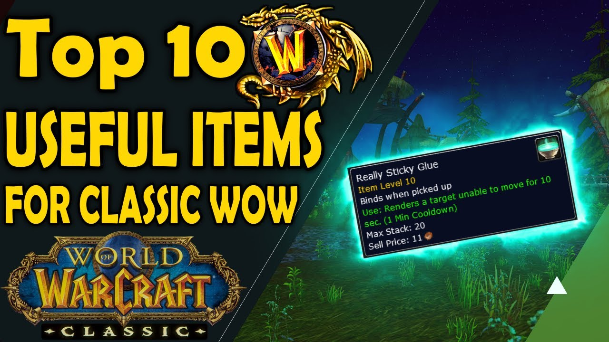
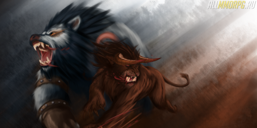

Полезности WoW
Подробнее...
В данном разделе имеются все понравившиеся мне дополнения к ВоВ, будь-то какой-то софт, либо простые аддоны!

Изучение ферала
Подробнее...
А в этом разделе сайта я веду "личный блог", о том как преодолеваю сложности в игре за ферала, и соответственно оставляю личные рекомендации.